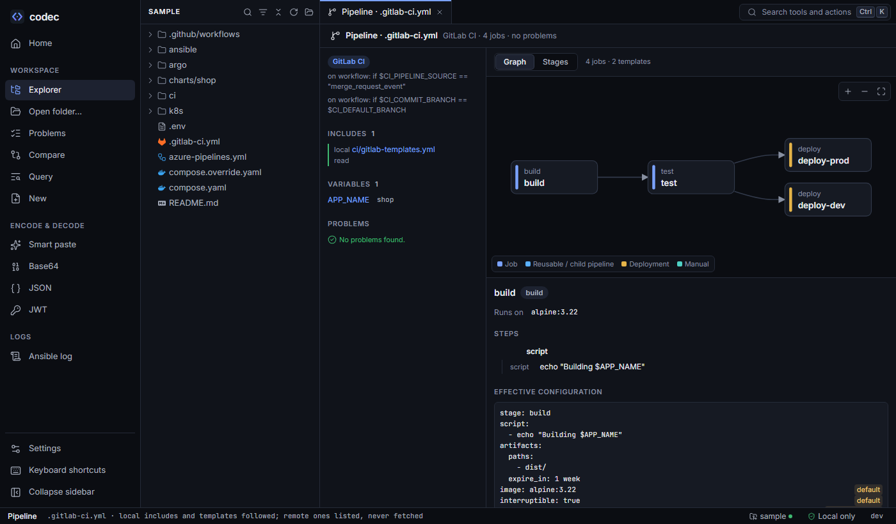
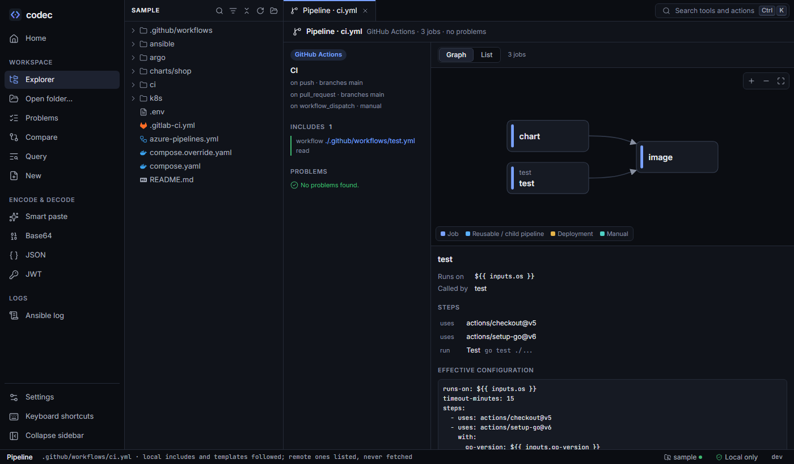

CI pipelines
The Pipeline view shows a GitHub Actions workflow, a GitLab CI pipeline or an Azure pipeline as it will run: jobs in execution order, every matrix combination, and each job's effective configuration after includes, templates and inheritance — every line saying where it came from.

.gitlab-ci.yml: the included template file is read, jobs are drawn in needs order, and lines inherited from default: are labelled.In every pipeline#
- Graph — jobs as nodes in real execution order (
needs, stage order,dependsOn), deployments and manual jobs coloured. Or a list by stage. - Job details — its steps or script, what it waits for, rules and conditions, runner or image, and its effective configuration: the job as the CI system will run it, each line annotated with its origin (the job itself,
extends .base,default, global variables,!reference, a template file). - Includes and templates — local files are read and followed; remote ones (projects, URLs, components, marketplace actions) are listed as not read. codec never fetches anything.
- Problems — unknown jobs and templates, missing files,
needsacross stages that can't work, undeclared inputs and parameters, and more. - Editor — jobs, stages and steps in the outline; hover and go to definition for
needs,extends,!reference, local includes,uses:,template:,dependsOnand${{ }}contexts; Azure$(var),$[ ]and GitLab$[[ inputs ]]highlighted.
GitHub Actions#

test.yml read in place, and jobs in needs order.- Triggers summarised: events, branches, paths, schedules, manual inputs.
- Matrix — every combination, with
includeandexcludeapplied and marked, so you can see exactly which jobs a push starts. - Reusable workflows in the repository (
uses: ./.github/workflows/x.yml) run in the caller's place; the inputs passed are checked against the ones declared. - Composite actions in the repository show their steps.
- Expressions:
${{ inputs.x }},env,matrix,needs.*.outputsandstepscontexts are checked; secrets are shown by name only.
GitLab CI#
include: localfollowed, globs included; project, remote, template and component includes listed.- Anchors and merge keys,
!reference,extends(multiple levels), anddefault:withinherit:merged the way GitLab does. parallel: matrixjobs named the way GitLab names them; child pipelines (trigger: include) shown.- Global variables, workflow rules and job rules shown with each job.
codec ci job .gitlab-ci.yml deploy-prod
# deploy-prod .gitlab-ci.yml:42
# extends .deploy
stage: deploy # ← extends .deploy ci/gitlab-templates.yml:12
image: alpine/helm:3.19.0 # ← extends .deploy ci/gitlab-templates.yml:13
needs: # ← extends .deploy ci/gitlab-templates.yml:14
- test
script: # ← extends .deploy ci/gitlab-templates.yml:17
- helm upgrade --install $APP_NAME charts/shop -f charts/shop/values-$ENVIRONMENT.yaml
variables:
APP_NAME: shop # ← global variables
ENVIRONMENT: prod
rules:
- if: $CI_COMMIT_BRANCH == $CI_DEFAULT_BRANCH
when: manual
interruptible: true # ← defaultAzure Pipelines#
- Local
template:files (steps, jobs, stages, variables) inserted with their parameters;extends:templates. ${{ if }},${{ each }}and${{ parameters.x }}evaluated. Set what-if parameters in the view (or-pon the CLI) to see a different expansion — for example the sample'senvironmentslist producing one deploy stage per entry.- Stages, jobs and deployment jobs with
dependsOnandcondition.
What codec can't know#
codec reads files, it doesn't run pipelines. Runtime values (variables from the CI server, secrets, outputs of earlier jobs) stay as written. Rules that depend on them are shown, not evaluated. Remote includes and marketplace actions are listed but not read.
From the command line#
codec ci jobs .gitlab-ci.yml # stages and jobs in execution order; exit 2 on problems
stage deploy
deploy-dev · alpine/helm:3.19.0
after test
extends .deploy
deploy-prod · alpine/helm:3.19.0
after test
extends .deploy
rule if $CI_COMMIT_BRANCH == $CI_DEFAULT_BRANCH → manual
codec ci job .gitlab-ci.yml deploy-prod # effective config with origins
codec ci jobs .github/workflows/ci.yml --json
codec ci graph azure-pipelines.yml -p runTests=false --format dot | dot -Tsvg > ci.svgIncludes and templates are read from the repository: the folder holding .git, or --root.